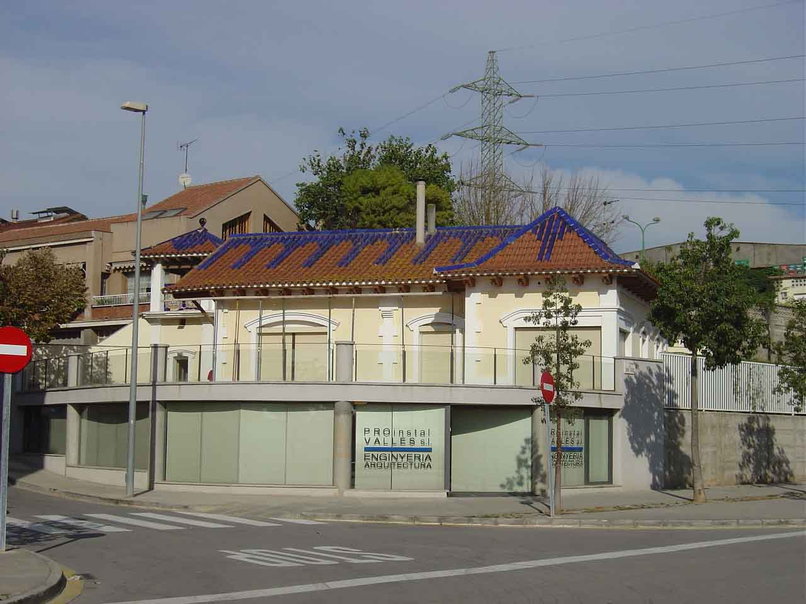
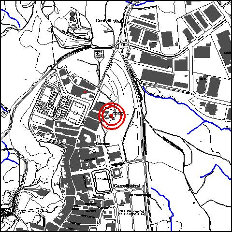

|  |
 |
Nom de l’element: Can Sala
Clau d’identificació: A.09
Nucli o indret: c/ Montserrat 5 (nucli urbà).
UTM: X=415.147, Y= 4.592.622, 146 m snm.
Règim del sòl: sòl urbà.
1.1. Època de construcció i tipologia:
Habitatge de planta rectangular amb algun cos sortint de planta baixa, d’inicis del s.XX, d’estil eclèctic amb elements neoclàssics adulterats. Té una coberta singular a quatre aigües amb un dibuix de les teules del carener que són de ceràmica vidriada blava. Els murs són d’obra i arrebossats i l’estructura de la coberta és de fusta. Les obertures de la façana estan emmarcades per emmotllurats, els quals són una interpretació amanerada del neoclassicisme. Té un voladís amb un embigat de fusta del ràfec de coberta en tot el conjunt. Existeix una torre annexa, on s’hi ubica un dipòsit d’aigua. Es va destruir una escala singular quan es va construir el mur perimetral. Presenta un annex a la part posterior de construcció més recent.
1.2. Estat de conservació:
Dolent. Presenta problemes d’humitat.
1.3. Ús actual:
Habitatge. A la part inferior hi ha una activitat (despatx professional).
1.4. Accés:
Accés fàcil per c/ Montserrat.
Edifici d’inicis del segle XX, d’estil eclèctic, amb ceràmica vidriada blava a la coberta.
3.1. Usos admesos:
Equipament recreatiu cultural i social.
3.2. Condicions d’ordenació:
Segons Pla de Millora Urbana pendent de redactar (ARI-SMU 02)
3.3. Accés i serveis:
Accés per c/ Montserrat.
BCIL (Bé Cultural d’Interes Local)